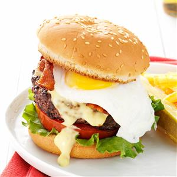

Easy Egg Recipe

Eggs Benedict Burgers
Prep time
25 mins
bake time
10 mins
Total time
35 mins
SERVES: 4
Ingredients
1-1/2 pounds ground beef
1/2 teaspoon salt
1/4 teaspoon pepper
4 hamburger buns, split
1 envelope hollandaise sauce mix
1-1/2 teaspoons stone-ground mustard
4 large eggs
4 lettuce leaves
4 slices tomato
6 bacon strips, halved and cooked
Directions:
In a large bowl, combine beef, salt and pepper, mixing lightly but thoroughly. Shape into four 1/2-in.-thick patties.
Grill burgers, covered, over medium heat 4-6 minutes on each side or until a thermometer reads 160°. Grill buns, cut side down, until toasted. Meanwhile, prepare sauce mix according to package directions using milk; stir in mustard. Keep warm.
Heat a large nonstick skillet coated with cooking spray over medium-high heat. Break eggs, one at a time, into pan; reduce heat to low. Cook until desired doneness, turning after whites are set if desired.
Place lettuce, tomato and burgers on bottoms of buns; top with bacon, eggs and sauce. Replace tops. Yield: 4 servings.
Serve Hot. Enjoy!
NUTRITION
1 burger: 723 calories, 45g fat (19g saturated fat), 364mg cholesterol, 1198mg sodium, 30g carbohydrate (7g sugars, 1g fiber), 48g protein.